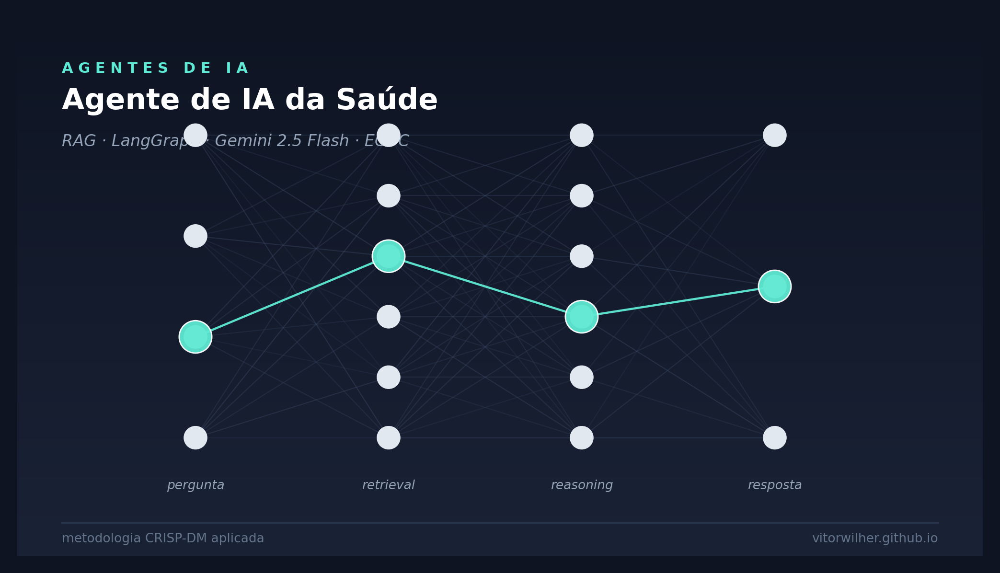

flowchart TB
U([Usuário])
UI[Shiny Chat UI]
AG{LangGraph<br>ReAct Agent<br>gemini-2.5-flash}
T[Tool:<br>search_health_documents]
R[Retriever MMR<br>k=7]
VS[(Chroma<br>chroma_db/)]
MEM[(MemorySaver<br>thread_id)]
U <--> UI
UI <--> AG
AG <-->|decide se busca| T
T --> R
R --> VS
AG <--> MEMAgente de IA da Saúde — RAG sobre Relatórios Epidemiológicos da ECDC
Python
Google Gemini
LLM
RAG
LangGraph
LangChain
Chroma
Shiny
shinyapps.io
Agente
Saúde
Agente conversacional ReAct (LangGraph + Gemini 2.5 Flash) sobre relatórios epidemiológicos da ECDC — recuperação contextual via Chroma e UI Shiny publicada em shinyapps.io.

Visão Geral
Este projeto implementa, seguindo a metodologia CRISP-DM (Cross-Industry Standard Process for Data Mining), um agente de IA conversacional que responde perguntas de profissionais de saúde com base em relatórios epidemiológicos do European Centre for Disease Prevention and Control (ECDC) de 2021 sobre Zika, Sífilis e Tuberculose.
As seis fases do CRISP-DM foram adaptadas para um sistema de IA generativa com RAG e agente ReAct: a “modelagem” aqui é a composição agente + retriever + LLM com prompt engineering anti-alucinação; a “avaliação” é validação de precisão factual contra os PDFs de origem; o “deployment” é publicação em ambiente PaaS gerenciado.
TipAplicação no ar
Disponível em https://analisemacro.shinyapps.io/agente_ia_saude_poc/ — código-fonte em https://github.com/vitorwilher/agente_ia_saude.
1. Entendimento do Negócio (Business Understanding)
1.1 Problema
Profissionais de saúde — principalmente médicos — precisam consultar dados epidemiológicos oficiais (incidência, taxas, faixas etárias, coinfecções, recomendações) com agilidade, mas os relatórios da ECDC são longos, em inglês e densos em tabelas. A leitura manual é lenta e propensa a erro de transcrição.
1.2 Objetivo
Construir um assistente conversacional que:
- Aceita perguntas em linguagem natural (PT/EN);
- Retorna respostas factuais e ancoradas nos relatórios;
- Recusa responder quando a informação não estiver nas fontes;
- Mantém memória de conversa para perguntas de follow-up.
1.3 Critérios de sucesso
| Critério | Meta |
|---|---|
| Precisão factual | Números citados conferem com o PDF de origem |
| Anti-alucinação | Recusa explícita quando o contexto não cobre a pergunta |
| Idioma | Resposta no idioma da pergunta |
| Latência | Resposta em menos de 10s no free tier |
| Custo operacional | US$ 0 (free tier do Gemini) |
1.4 Restrições identificadas
- API: free tier do Google Gemini → limites de RPM e modelos disponíveis.
- Hospedagem: shinyapps.io Free → limite de horas-instância e ausência de gestão de variáveis de ambiente via painel.
- Conhecimento fechado: o agente não deve responder com conhecimento genérico do LLM, apenas a partir dos PDFs.
2. Entendimento dos Dados (Data Understanding)
2.1 Fontes
Três relatórios anuais da ECDC publicados em 2021, totalizando 22 páginas:
| Documento | Páginas | Tema |
|---|---|---|
| Zika virus disease — annual epidemiological report 2021 | ~7 | Zika |
| Syphilis — annual epidemiological report 2021 | ~10 | Sífilis |
| Tuberculosis — annual epidemiological report 2021 | ~5 | Tuberculose |
| Total | 22 |
2.2 Características relevantes
- Texto estruturado em seções (epidemiologia, idade/gênero, transmissão, recomendações);
- Tabelas e quadros com números absolutos e taxas por 100.000 habitantes;
- Idioma: inglês;
- Domínio fechado: ano-base 2021, escopo geográfico UE/EEE.
TipInsight de Data Understanding
Por serem relatórios oficiais com estrutura padronizada (mesmo template ECDC), os PDFs se beneficiam de chunking baseado em separadores naturais (parágrafos, seções) — daí a escolha do RecursiveCharacterTextSplitter à frente.
3. Preparação dos Dados (Data Preparation)
3.1 Pipeline de indexação
Implementado em src/index.py, executado uma única vez (e refeito apenas quando os PDFs mudam):
loader = DirectoryLoader(
path=database_dir, glob="*.pdf", loader_cls=PyPDFLoader
)
documents = loader.load() # 22 páginas
splitter = RecursiveCharacterTextSplitter(
chunk_size=1500,
chunk_overlap=200,
)
chunks = splitter.split_documents(documents) # 52 chunks
Chroma.from_documents(
documents=chunks,
embedding=get_embeddings(),
collection_name="health_reports",
persist_directory="chroma_db",
)3.2 Decisões de preparação
| Hiperparâmetro | Valor | Justificativa |
|---|---|---|
chunk_size |
1500 | Captura parágrafo inteiro sem perder precisão de retrieval |
chunk_overlap |
200 | Evita perder contexto em fronteiras de chunk |
embedding_model |
gemini-embedding-001 |
Modelo estável atual do Google (3072 dimensões) |
| Vetor store | Chroma persistente | Local, sem custo, ideal para POC |
WarningMigração forçada de modelo
O modelo originalmente escolhido — text-embedding-004 — foi descontinuado pelo Google durante a evolução do projeto. Migrou-se para gemini-embedding-001, que produz embeddings com 3072 dimensões (vs 768 antigos), aumentando o tamanho do índice em ~4×.
3.3 Separação build × runtime
Decisão arquitetural importante: a indexação foi separada do código de runtime.
src/index.py→ executado offline, gerachroma_db/;src/rag.py→ executado a cada cold start, apenas carrega o índice persistido.
Benefício: cold start em segundos em vez de minutos, e zero chamadas de embedding em produção.
4. Modelagem (Modeling)
4.1 Arquitetura: Agente ReAct + RAG
4.2 Por que um agente, e não RAG puro?
Em um RAG clássico, toda pergunta dispara retrieval + LLM. Isso é desnecessário para saudações (“oi”), perguntas fora de escopo ou perguntas que o agente já respondeu antes na conversa.
O agente ReAct decide dinamicamente:
- “Quantos casos de Zika em 2021?” → chama a tool, busca, responde.
- “Bom dia!” → responde direto, sem busca.
- “E nas mulheres?” (follow-up) → reformula a query da tool com contexto da conversa.
4.3 Hiperparâmetros do LLM
| Parâmetro | Valor |
|---|---|
| Modelo | gemini-2.5-flash |
temperature |
0 |
top_p |
0.9 |
top_k |
40 |
max_output_tokens |
5000 |
temperature = 0 é deliberada: queremos respostas determinísticas e factuais, não criativas.
4.4 System prompt (anti-alucinação)
Trecho do configs.json:
“Você tem acesso a uma ferramenta
search_health_documents. Use-a sempre que a pergunta exigir dados factuais. Nunca invente dados. Se o contexto recuperado não cobrir a pergunta, diga que não sabe. Cite números exatos. Responda no idioma da pergunta.”
4.5 Memória de conversa
MemorySaver do LangGraph persiste o histórico por thread_id. No app Shiny, o thread_id = session.id, garantindo que cada usuário tem sua própria conversa isolada.
5. Avaliação (Evaluation)
5.1 Validação end-to-end
Teste de fumaça com pergunta canônica do PDF de Zika:
Pergunta: “Quantos casos de Zika foram registrados na União Europeia em 2021?”
Resposta: “Em 2021, foram registrados 7 casos de doença do vírus Zika em países da União Europeia/Espaço Econômico Europeu (UE/EEE). Os casos foram notificados pela Espanha (n=4), Alemanha (n=2) e Luxemburgo (n=1).”
Validação: confere com o PDF original (página 1, tabela “Number of cases by reporting country”).
5.2 Critérios qualitativos atingidos
- ✅ Precisão numérica
- ✅ Granularidade preservada (breakdown por país)
- ✅ Idioma da pergunta (PT)
- ✅ Sem alucinação
- ✅ Latência menor que 5s em chamada quente
5.3 Limitações conhecidas
- Não cita explicitamente qual PDF + página abaixo da resposta (o metadado existe, só não é exposto no Shiny);
- Sem avaliação automatizada (golden set de Q&A);
- Sem observabilidade de runtime (latência, taxa de uso da tool, etc.).
6. Deployment
6.1 Stack de produção
| Camada | Tecnologia |
|---|---|
| UI | Shiny for Python (shiny.express) |
| Orquestração de agente | LangGraph (create_react_agent) |
| LLM | Google Gemini API (gemini-2.5-flash) |
| Vetor DB | Chroma (persistência local) |
| Hospedagem | shinyapps.io |
| Deploy | rsconnect-python |
6.2 Comando de deploy
rsconnect deploy shiny . \
-n analisemacro \
--entrypoint src/app \
--exclude '.DS_Store' \
--exclude '__pycache__' \
--exclude 'rsconnect-python' \
--exclude '.git'
ImportantLições aprendidas no deploy
- Para shinyapps.io use
-n <nickname>, não--serverou--accountsozinhos — falham silenciosamente. - Variáveis de ambiente (ex:
GOOGLE_API_KEY) só são gerenciáveis via painel em planos pagos. No Free, a alternativa é incluir o.envno bundle. gemini-2.0-flashsaiu do free tier — atualmente é necessário usargemini-2.5-flashougemini-2.5-flash-lite.chroma_db/ultrapassa o limite de 100MB do GitHub — gitignored; quem clonar precisa rodarpython src/index.pylocalmente.
6.3 Ciclo de manutenção
flowchart LR
A[PDFs novos<br>ou atualizados] --> B[python src/index.py --force]
B --> C[Teste local<br>shiny run src/app.py]
C --> D[git commit<br>+ git push]
D --> E[rsconnect deploy]
E --> F([Produção])Trabalhos futuros
- Mostrar fontes abaixo de cada resposta (PDF + página);
- Avaliação automatizada: golden set de Q&A com
ragasoulangsmith; - Observabilidade: integrar com LangSmith / Phoenix para rastrear latência, taxa de uso da tool, qualidade das respostas;
- Expandir base: incluir mais relatórios da ECDC e de outras agências (CDC, OMS);
- Caching de respostas para perguntas frequentes.
Referências
- ECDC. Annual Epidemiological Reports 2021. https://www.ecdc.europa.eu
- Wirth, R.; Hipp, J. (2000). CRISP-DM: Towards a Standard Process Model for Data Mining.
- LangChain. LangGraph ReAct Agent. https://langchain-ai.github.io/langgraph/
- Posit. Shiny for Python. https://shiny.posit.co/py/